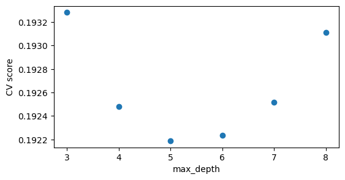

Can we use OpenAI’s ChatGPT to predict the sentiment of tweets?
How to use OpenAI’s ChatGPT for anything from writing poems to question answering and translation.
Using a hierarchical Bayesian model to analyze and compare excess mortality due to Covid-19 in the German states.
Gradient Boosted Decision Trees can be effective models for forecasting.
